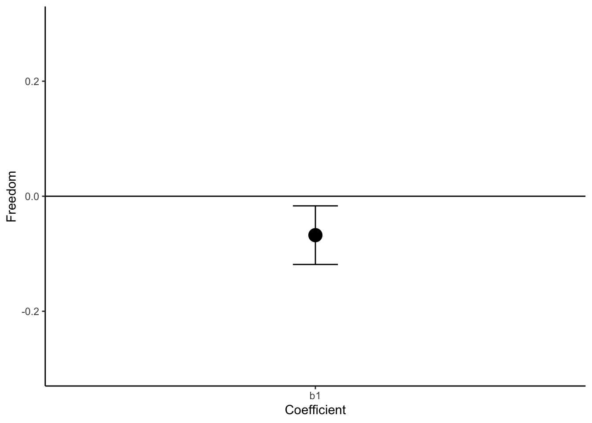
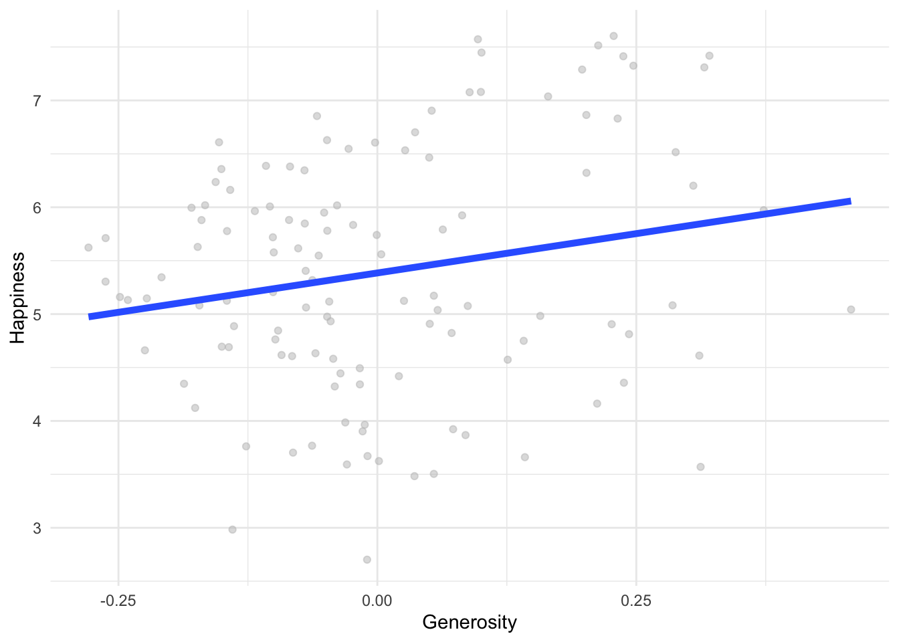
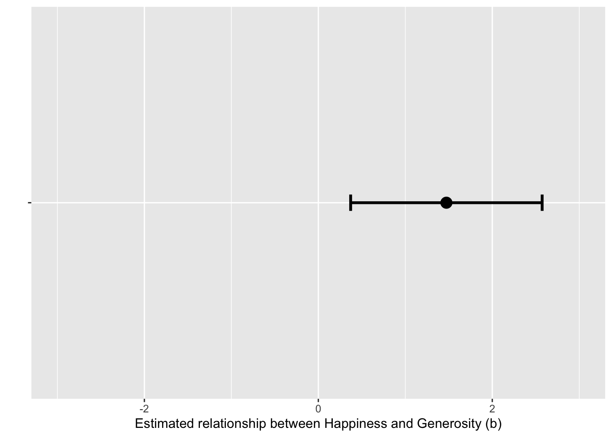

library(tidyverse)
library(psych)
library(emmeans)
library(lmtest)
data_full <- read.csv("homework-world.csv")homework 2 key
Q1
1A
Run model in R to test your hypothesis. Interpret regression coefficients.
Q1_data <- data_full %>%
filter((World == 1 | World == 4) & !is.na(Freedom))
Q1_data$World <- as.factor(Q1_data$World)
contrasts(Q1_data$World) 4
1 0
4 1Q1_model <- lm(Freedom ~ World, data = Q1_data)
summary(Q1_model)
Call:
lm(formula = Freedom ~ World, data = Q1_data)
Residuals:
Min 1Q Median 3Q Max
-0.31427 -0.07735 0.02967 0.09682 0.16732
Coefficients:
Estimate Std. Error t value Pr(>|t|)
(Intercept) 0.83025 0.02469 33.629 <2e-16 ***
World4 -0.06771 0.02967 -2.282 0.0253 *
---
Signif. codes: 0 '***' 0.001 '**' 0.01 '*' 0.05 '.' 0.1 ' ' 1
Residual standard error: 0.1209 on 76 degrees of freedom
Multiple R-squared: 0.06412, Adjusted R-squared: 0.05181
F-statistic: 5.207 on 1 and 76 DF, p-value: 0.02529For First-World Countries, the average Freedom score is expected to be 0.83.
The average Freedom score for Fourth-World countries is expected to be 0.07 lower than First-World Countries.
1B
Using the ANOVA function, interpret what the F test tests.
anova(Q1_model)Analysis of Variance Table
Response: Freedom
Df Sum Sq Mean Sq F value Pr(>F)
World 1 0.07618 0.076175 5.2073 0.02529 *
Residuals 76 1.11176 0.014628
---
Signif. codes: 0 '***' 0.001 '**' 0.01 '*' 0.05 '.' 0.1 ' ' 1The inclusion of World as an IV explains a significant proportion of variance in Freedom, F(1,76) = 5.21, p = .025.
1C
In words, what are the null and alternative hypotheses for the intercept and regression coefficient.
Intercept:
Null Hypothesis: The mean of Freedom for First-World Countries is 0.
Alternative Hypothesis: The mean of Freedom for First-World Countries is not 0.
Slope:
Null Hypothesis: The mean difference of Freedom between First and Fourth-World Countries is 0.
Alternative Hypothesis: The mean difference of Freedom between First and Fourth-World Countries is not 0.
1D
What is the null and alternative hypotheses for the F-test.
Null Hypothesis: The proportion of variance in Freedom explained by World is 0.
Alternative Hypothesis: The proportion of variance in Freedom explained by World is not 0.
1E
What is an effect size that you would use to interpret this model?
Either Cohen’s d or Multiple R-squared would be appropriate for comparing means:
Q1_cohen_d <- cohen.d(Freedom ~ World, data = Q1_data)
paste("Cohen's d: ", round(Q1_cohen_d$cohen.d[2], 2))[1] "Cohen's d: -0.57"paste("Multiple R-squared: ", round(summary(Q1_model)$r.squared, 2))[1] "Multiple R-squared: 0.06"1F
What is your critical value where you would reject an alpha of .01 in terms of both the t distribution and the original metric?
#Getting the Standard Error of b1:
b1_SE_Q1_model <- coef(summary(Q1_model))["World4","Std. Error"]
paste("Standard Error of b1:", round(b1_SE_Q1_model, 2))[1] "Standard Error of b1: 0.03"#Getting the critical t-values when alpha = .01:
t_critical_high = qt(p = .995, df = 76)
paste("High critical t-value: ", round(t_critical_high, 2))[1] "High critical t-value: 2.64"t_critical_low = qt(p = .005, df = 76)
paste("Low critical t-value: ", round(t_critical_low, 2))[1] "Low critical t-value: -2.64"#Getting the raw critical values when alpha = .01:
raw_critical_high <- t_critical_high * b1_SE_Q1_model
paste("High critical raw unit value: ", round(raw_critical_high, 2))[1] "High critical raw unit value: 0.08"raw_critical_low <- t_critical_low * b1_SE_Q1_model
paste("Low critical raw unit value: ", round(raw_critical_low, 2))[1] "Low critical raw unit value: -0.08"1G
What is your test statistic? Both in terms of the original metric and the t-distribution.
#test statistic in term of the original metric:
paste("Test statistic in original units: ", round(coef(summary(Q1_model))["World4","Estimate"],2))[1] "Test statistic in original units: -0.07"#test statistic in terms of the t-distribution:
paste("Test statistic as a t-value: ", round(coef(summary(Q1_model))["World4","t value"],2))[1] "Test statistic as a t-value: -2.28"1H
What is your NHST decision?
#Get b1 coefficient:
b1_Q1_model <- coef(summary(Q1_model))["World4","Estimate"]
if(abs(b1_Q1_model) > raw_critical_high) {print("reject the null hypothesis")} else {print("retain the null hypothesis")}[1] "retain the null hypothesis"With an alpha level of .01, our test statistic (-.07/-2.28) is less extreme than our critical value (-.08/-2.64), i.e., it does not fall within the critical region. Thus, we fail to reject the null hypothesis.
1I
Interpret your p-value.
Assuming that the null hypothesis is true, the probability of obtaining this test statistic or a more extreme value is .025.
1J
Graph your result.
1K
Create a 91% confidence interval around your estimate.
#Calculate CI for b1:
b1_upper_CI <- b1_Q1_model + (qt(p = .955, df = 76)*b1_SE_Q1_model)
b1_lower_CI <- b1_Q1_model - (qt(p = .955, df = 76)*b1_SE_Q1_model)
#Create dataframe for graphing b1 only:
b1_df <- data.frame(Freedom = b1_Q1_model, Coefficient = "b1", Upper_CI = b1_upper_CI, Lower_CI = b1_lower_CI)
#Graphing the difference in beta1:
ggplot(data = b1_df, aes(x = Coefficient, y = Freedom))+
geom_point(size = 5)+
geom_errorbar(aes(ymin = Lower_CI, ymax = Upper_CI), width = .1)+
geom_hline(yintercept = 0)+
ylim(-.3,.3)+
theme_classic()
These questions can be answered in a variety of ways.
1L
Run a null or intercept only model. Compare this model to the model in A. Do you get the same p-value as in I? How come/why not?
Q1_null_model <- lm(Freedom ~ 1, data = Q1_data)
summary(Q1_null_model)
Call:
lm(formula = Freedom ~ 1, data = Q1_data)
Residuals:
Min 1Q Median 3Q Max
-0.33510 -0.08811 0.01820 0.10303 0.16425
Coefficients:
Estimate Std. Error t value Pr(>|t|)
(Intercept) 0.78337 0.01406 55.7 <2e-16 ***
---
Signif. codes: 0 '***' 0.001 '**' 0.01 '*' 0.05 '.' 0.1 ' ' 1
Residual standard error: 0.1242 on 77 degrees of freedomanova(Q1_null_model, Q1_model)Analysis of Variance Table
Model 1: Freedom ~ 1
Model 2: Freedom ~ World
Res.Df RSS Df Sum of Sq F Pr(>F)
1 77 1.1879
2 76 1.1118 1 0.076175 5.2073 0.02529 *
---
Signif. codes: 0 '***' 0.001 '**' 0.01 '*' 0.05 '.' 0.1 ' ' 1The p-values are the same when comparing the original model to the intercept only model because the intercept only model does not explain any variance in Y.
1M
Run the model in A using a glm function. Do a likelihood ratio test compared to a null model. How does this differ from L?
#Generalized linear model:
Q1_glm_model <- glm(Freedom ~ World, data = Q1_data)
summary(Q1_glm_model)
Call:
glm(formula = Freedom ~ World, data = Q1_data)
Coefficients:
Estimate Std. Error t value Pr(>|t|)
(Intercept) 0.83025 0.02469 33.629 <2e-16 ***
World4 -0.06771 0.02967 -2.282 0.0253 *
---
Signif. codes: 0 '***' 0.001 '**' 0.01 '*' 0.05 '.' 0.1 ' ' 1
(Dispersion parameter for gaussian family taken to be 0.01462846)
Null deviance: 1.1879 on 77 degrees of freedom
Residual deviance: 1.1118 on 76 degrees of freedom
AIC: -104.21
Number of Fisher Scoring iterations: 2#Likelihood Ratio Test:
lrtest(Q1_null_model, Q1_glm_model)Likelihood ratio test
Model 1: Freedom ~ 1
Model 2: Freedom ~ World
#Df LogLik Df Chisq Pr(>Chisq)
1 2 52.518
2 3 55.103 1 5.1692 0.02299 *
---
Signif. codes: 0 '***' 0.001 '**' 0.01 '*' 0.05 '.' 0.1 ' ' 1In the Likelihood Ratio Test (LRT), the p-value is slightly different because glm() uses Maximum Likelihood Estimation (MLE) rather than Ordinary Least Squares (OLS) to determine the best fit. This model has no residual SS vs model SS, so the model comparison instead uses logged likelihoods. Because the ratio of two logged likelihoods is chi-square distributed, the test statistic is a chi square instead of an F. However, the p-value is basically the same between the two model comparisons, so they lead to similar conclusions about whether First World vs. Fourth World status explains variance in Freedom.
Q2
2A
Run model in R to test your hypothesis. Interpret regression coefficients.
- b0: A country with a Generosity level of 0 is predicted to have a Happiness level of 5.38.
- b1: For each 1-unit increase in Generosity, a country’s Happiness level is predicted to increase by 1.47 units.
#Only include rows with complete cases for Happiness and Generosity (no "NA"s)
Q2_data <- data_full[complete.cases(data_full[c("Happiness", "Generosity")]), ]
mod2 <- lm(Happiness ~ Generosity, data = Q2_data)
summary(mod2)
Call:
lm(formula = Happiness ~ Generosity, data = Q2_data)
Residuals:
Min 1Q Median 3Q Max
-2.6688 -0.8204 0.0955 0.8757 2.0442
Coefficients:
Estimate Std. Error t value Pr(>|t|)
(Intercept) 5.3850 0.1013 53.160 <2e-16 ***
Generosity 1.4725 0.6494 2.268 0.0252 *
---
Signif. codes: 0 '***' 0.001 '**' 0.01 '*' 0.05 '.' 0.1 ' ' 1
Residual standard error: 1.109 on 118 degrees of freedom
Multiple R-squared: 0.04176, Adjusted R-squared: 0.03364
F-statistic: 5.142 on 1 and 118 DF, p-value: 0.025172B
Using the ANOVA function, interpret what the F test tests.
- Does a country’s level of Generosity explain any variance in its level of Happiness/improve our prediction of Happiness? The F-value quantifies this as the amount variance in Happiness explained by the model (Regression Sum Sq), relative to variance that remains unexplained (Residual Sum Sq).
anova(mod2)Analysis of Variance Table
Response: Happiness
Df Sum Sq Mean Sq F value Pr(>F)
Generosity 1 6.329 6.3291 5.1423 0.02517 *
Residuals 118 145.234 1.2308
---
Signif. codes: 0 '***' 0.001 '**' 0.01 '*' 0.05 '.' 0.1 ' ' 12C
In words, what are the null and alternative hypotheses for the intercept and regression coefficient.
b0 - Null Hypothesis (H0): When a country’s Generosity level is 0, its Happiness level is 0. - Alternative Hypothesis (H1): When a country’s Generosity level is 0, its Happiness level is anything other than 0.
b1 - Null Hypothesis (H0): There is no linear relationship between a country’s level of Generosity and its level of Happiness. - Alternative Hypothesis (H1): There is some linear relationship (> or < 0) between a country’s level of Generosity and its level of Happiness.
2D
What is the null and alternative hypotheses for the F-test.
- Null Hypothesis (H0): A country’s level of Generosity does not explain any variance in its level of Happiness.
- Alternative Hypothesis (H1): A country’s level of Generosity explains some amount of variance in its level of Happiness.
2E
What is an effect size that you would use to interpret this model?
- There are many effect sizes for relationships between two continuous variables, and so several correct answers for this question. Standardized effect sizes include R^2, standardized b, r, and multiple R. The regression coefficient (b) is an unstandardized effect size.
2F
What is your critical value where you would reject an alpha of .01 in terms of both the t distribution and the original metric?
- Critical t(alpha = 0.1, df = 118) = 2.62
- Critical value in original units = 1.70
# Critical t
alpha <- .01
q2_df <- nrow(Q2_data)-1-1
q2_critical_t <- qt(alpha/2,
df = q2_df)*-1
# Critical b (original units)
q2_se <- data.frame(summary(mod2)$coefficients)['Generosity', 'Std..Error']
q2_critical_b <- q2_critical_t * q2_se
q2_critical_t[1] 2.618137q2_critical_b[1] 1.7001042G
What is your test statistic? Both in terms of the original metric and the t-distribution.
- In original units, the test statistic is the b1 coefficient (1.47)
- The t-statistic is the b1 coefficient/standard error of b1 = 2.27
q2_b <- data.frame(summary(mod2)$coefficients)['Generosity', 'Estimate']
q2_t <- q2_b/q2_se
q2_b[1] 1.472521q2_t[1] 2.2676622H
What is your NHST decision?
- With an alpha level of .01, our test statistic (1.47/2.27) is less extreme than our critical value (1.70/2.62), i.e., it does not fall within the critical region. Thus, we fail to reject the null hypothesis.
2I
Interpret your p-value.
- The probability of observing a linear relationship between Generosity and Happiness equal to or more extreme than b = 1.47, assuming that the true relationship is B = 0, is ~.025.
pt(q2_t*-1, df = q2_df) + (1 - pt(q2_t, df = q2_df))[1] 0.025169432J
Graph your result.
ggplot(data = Q2_data, aes(x = Generosity, y = Happiness))+
geom_jitter(color = "grey", alpha = 0.5)+
geom_smooth(method = "lm", se = F, linewidth = 1.8)+
theme_minimal()`geom_smooth()` using formula = 'y ~ x'
2K
Create a 91% confidence interval around your estimate.
- b = 1.47 [91% CI: 0.37, 2.57]
q2_crit <- qnorm((1-.91)/2)*-1
q2_b - (q2_crit*q2_se)[1] 0.3716037q2_b + (q2_crit*q2_se)[1] 2.573438ggplot(data = data.frame(y = " ",
b = q2_b,
ci = q2_crit*q2_se),
aes(x = b, y = y))+
geom_point(size = 4)+
geom_errorbar(aes(xmin = b - ci, xmax = b + ci),
width = 0.05, linewidth = 1.1)+
scale_x_continuous(limits = c(-3,3))+
labs(x = "Estimated relationship between Happiness and Generosity (b)",
y = "")
2L
Run a null or intercept only model. Compare this model to the model in A. Do you get the same p-value as in I? How come/why not?
- Yes, the p-value is the same. The two test are equivalent because testing whether Generosity explains variance in Happiness (against the null hypothesis that it explains no variance; i.e., is equivalent to a model with no predictors) is the same as testing whether there is a linear relationship between Generosity and Happiness (against the null hypothesis that there is no relationship; i.e., that the slope of the linear relationship between = 0).
mod0.2 <- lm(Happiness ~ 1, data = Q2_data)
anova(mod0.2, mod2)Analysis of Variance Table
Model 1: Happiness ~ 1
Model 2: Happiness ~ Generosity
Res.Df RSS Df Sum of Sq F Pr(>F)
1 119 151.56
2 118 145.23 1 6.3291 5.1423 0.02517 *
---
Signif. codes: 0 '***' 0.001 '**' 0.01 '*' 0.05 '.' 0.1 ' ' 11M
Run the model in A using a glm function. Do a likelihood ratio test compared to a null model. How does this differ from L?
- As before, this test differs from L in that it uses logged likelihood as the fit index rather than residual sums of squares, and thus uses the chi square test instead of the F-test. However, as before, the p-value is very similar between the two tests, so they produce similar conclusions about whether Generosity explains variance in Happiness.
#Generalized linear model:
glm2 <- glm(Happiness ~ Generosity, family = gaussian, data = Q2_data)
lrtest(mod0.2, glm2)Likelihood ratio test
Model 1: Happiness ~ 1
Model 2: Happiness ~ Generosity
#Df LogLik Df Chisq Pr(>Chisq)
1 2 -184.28
2 3 -181.72 1 5.1187 0.02367 *
---
Signif. codes: 0 '***' 0.001 '**' 0.01 '*' 0.05 '.' 0.1 ' ' 1